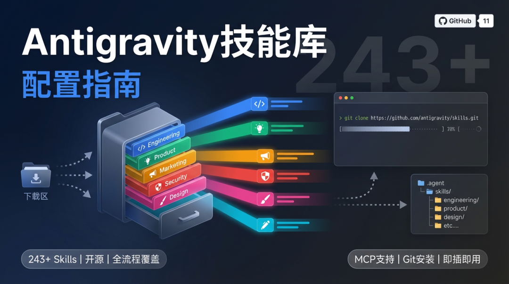

Antigravity技能库配置指南
一、概述
Antigravity-Awesome-Skills 是一个开源技能库，收录了 243+ 个 AI Skill，覆盖从代码开发到设计创作的全流程。本文将介绍如何在本地环境中配置和使用这些技能。
二、前置准备
在开始配置之前，请确保具备以下条件：
- Antigravity 客户端
：或其他支持 MCP Skills 的 Claude 客户端 - Git 工具
：用于克隆仓库（也可直接下载 ZIP 包）
三、技能库分类
分类 | 核心技能 | 适用人群 |
|---|---|---|
Engineering（工程） | code-review-checklist、tech-stack-advisor、api-docs-generator | 程序员、技术负责人 |
Product（产品） | micro-saas-launcher、user-story-writer、competitor-analysis | 产品经理、独立开发者 |
Marketing（营销） | copywriting-master、seo-audit、social-content | 运营人员、自媒体从业者 |
Security（安全） | smart-contract-audit、pentest-checklist | 安全研究员 |
Design（设计） | ui-ux-critique、color-palette-generator | 设计师 |
Writing（写作） | doc-coauthoring、email-sequence、story-teller | 内容创作者 |
四、配置步骤
4.1 下载技能库
方式一：Git 克隆
git clone https://github.com/sickn33/antigravity-awesome-skills.git
方式二：ZIP 下载
访问 GitHub 仓库页面，点击 Code 按钮，选择 Download ZIP，下载后解压。
4.2 选择安装目录
根据使用场景，可选择以下两种安装模式：
模式 A：项目级安装（Workspace Scope）
路径：<项目根目录>/.agent/skills/ 适用场景：项目特有的工作流
模式 B：全局安装（Global Scope）
Windows：C:\Users\<用户名>\.gemini\antigravity\global_skills\ Mac/Linux：~/.gemini/antigravity/global_skills/ 适用场景：跨项目通用的技能
4.3 安装技能
将所需技能文件夹复制到对应目录。以下是推荐安装的技能：
技能名称 | 功能说明 |
|---|---|
micro-saas-launcher | 辅助构思和启动微型 SaaS 项目 |
browser-automation | 自动化浏览器操作 |
doc-coauthoring | 根据大纲自动生成文档 |
注意：复制完成后，必须重启 Antigravity 客户端才能生效。
五、使用验证
安装完成后，可通过以下方式验证技能是否生效：
帮我做一个 AI 宠物伴侣的 MVP 方案
或使用 @ 符号直接调用：
@micro-saas-launcher help me validate my idea
六、常见问题
问题 | 解决方案 |
|---|---|
技能未生效 | 检查安装路径是否正确，推荐使用 .agent/skills 目录 |
网络相关错误 | 部分技能需要下载额外的浏览器驱动，请确保网络畅通 |
技能冲突 | 安装前备份原有技能，避免重名覆盖 |
七、总结
Antigravity-Awesome-Skills 提供了丰富的 AI 技能库，通过简单的配置即可扩展 AI 客户端的能力。建议根据实际需求选择合适的安装模式，并优先安装与工作场景匹配的技能。